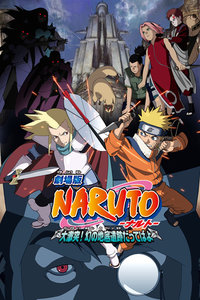

| 2004：大话剧！雪姬忍法帖！！ | ||||
| 别名：劇場版 NARUTO -ナルト- 大活劇!雪姫忍法帖だってばよ!!/火影忍者剧场版:大活剧!雪姬忍法帖!!/大活剧!雪姬忍法帖!!/Naruto Movie 1 Daikatsugeki! Yukihime ninpôchô dattebayo | 上映：2004-08-21 | 优酷开播： | 评分：7.2 | |
| 主演：未知 | 导演：冈村天斋 | 地区：日本 | 类型：格斗 / 冒险 / 忍者 | |
| 简介：故事发生在寒冷的雪之国雪之国的公主风花小雪于10年前逃脱了国破家亡的雪之国，并化名为富士风雪绘，以女演员的身份在火之国待了10年。 10年后，富士风雪绘重新踏上了雪之国的领土。在装备查克拉铠甲的雪忍的“欢迎仪式”下，一场为了梦想的战斗开始了…… 10年前的恩怨，如今一起解决……在鸣人等人的协助下，富士风雪绘是否能重新找回自我，让雪之国变为春之国呢？ | ||||
| 2005：大激突！幻之地底遗迹 | ||||
|  | 别名：劇場版 NARUTO -ナルト- 大激突!幻の地底遺跡だってばよ/大激突！梦幻的地底遗迹/Naruto Movie 2: Gekijyouban Naruto daigekitotsu! Maboroshi no chiteiis | 上映：2005-08-06 | 优酷开播：2011-07-27 | 评分：8.3 |
| 主演：未知 | 导演：川崎博嗣 | 地区：日本 | 类型：格斗 / 冒险 / 忍者 | |
| 简介：鸣人、小樱和鹿丸三人进入深山寻找走失的雪貂，在回来的路上，他们遭到全副武装的骑士团的袭击。在激烈的对抗中，鸣人和对方的白甲头目特穆金一同跌落悬崖，两人被刚巧路过的商队所救。一路上，两个对手慢慢开始了解，继而得知特穆金要建立一个没有战争和灾难的乌托邦，而鸣人具有的神奇力量正是他们所需要的。与此同时，鹿丸则和小樱目击到一个巨型堡垒，他们发现堡垒四周满是穿着铠甲的武士。鹿丸偷偷潜入侦查，看见一群被禁锢在容器中的小孩，并听到关于吉鲁遗产的谈话。这与特穆金之间究竟有什么样的关联？ | ||||
| 2006：大兴奋！三日月岛上的动物骚乱 | ||||
| 别名：劇場版 NARUTO -ナルト- 大興奮! みかづき島のアニマル騒動だってばよ/火影忍者:大兴奋!三日月岛的动物骚动/Naruto The Movie Volume 3 | 上映：2006-08-05 | 优酷开播：2011-07-27 | 评分：7.9 | |
| 主演：未知 | 导演：都留稔幸 | 地区：日本 | 类型：格斗 / 冒险 / 忍者 | |
| 简介：这是周刊《少年跳跃》上大红大紫的热血忍者漫画所推出的第三部电影版动画。 这次鸣人等年少的忍者们在卡卡西老师的带领下接受了护送月之国王子返回三日月岛的任务。没想到这个看似简单的任务却让鸣人十分头疼。 这位出生于超富小国的王子非常任性，喜欢大肆挥霍，因为看上了马戏团里的珍奇动物剑齿虎，就索性把整个马戏团都买了下来。 一路上鸣人他们不得不一边照顾王子，一边看住一群根本不听话动物，每天都搞得焦头烂额。好不容易将总算王子带回了三日月岛，不料在那里等待着他们的却是三个拥有可怕忍术的神秘敌人…… | ||||
| 2007：鸣人之死 | ||||

|
别名：劇場版 NARUTO -ナルト- 疾風伝ナルト、死す/火影忍者4 鸣人之死/Gekijô Ban Naruto: Shippûden | 上映：2007-08-04 | 优酷开播：2011-07-27 | 评分：7.7 |
| 主演：未知 | 导演：龟垣一 | 地区：日本 | 类型：格斗 / 冒险 / 忍者 | |
| 简介：紫苑─鬼之国巫女使用自己的特殊能力，预言鸣人即将死亡。她拥有两种能力，封印魔物的能力和预言他人死亡的能力。由于被“鬼”追杀，所以接受木叶忍者的保护。 这次故事的舞台是“鬼之国”，据知当地有“恶鬼”这种只存在传说中的怪物出现。因为紫苑的能力，所以那些魔物追杀紫苑，而鸣人等人就负责保护紫苑，被紫苑预言即将死亡的鸣人如果不离开紫苑，就会步入死亡，但失去鸣人保护的紫苑定会被魔物所杀。世上只有紫苑一人会封印魔物，如果紫苑死了，那世界定会踏上灭亡之路，所以鸣人决定留下保护紫苑，挑战那不会失效的“死之预言”。 | ||||
| 2008：羁绊 | ||||
| 别名：劇場版 NARUTO -ナルト- 疾風伝 絆/火影忍者疾风传剧场版 牵绊/Movie Naruto Shippûden Kizuna | 上映：2008-08-02 | 优酷开播： | 评分：7.8 | |
| 主演：未知 | 导演：龟垣一 | 地区：日本 | 类型：格斗 / 冒险 / 忍者 | |
| 简介：某日，一群使用风遁之术的空忍空袭火之国，无数民众和忍者遇害，形势危急。据纲手大人所言，这群不速之客正是在第二次忍者大战中落败的空之团，如今他们怀着复仇之心再次出现。卡卡西等人则负责侦查空之团的老巢，鸣人、小樱、雏田受命组成三人医疗小队，协助名医神农前往其徒弟雨琉的家乡医治伤者。另一方面，病入膏肓的大蛇丸得知神农的再生之术业已完成，他命佐助前去寻找神农。这也促成佐助和昔日伙伴宿命的重逢…… | ||||
| 2009：火之意志继承者 | ||||
| 别名：劇場版NARUTO-ナルト-疾風伝 火の意志を継ぐ者/第四忍界大战始发/火影忍者疾风传剧场版 火意志的继承者/Naruto The Movie Volume 6 | 上映：2009-08-01 | 优酷开播： | 评分：8.2 | |
| 主演：未知 | 导演：村田雅彦 | 地区：日本 | 类型：格斗 / 冒险 / 忍者 | |
| 简介：统治着大陆的5个大国.其中的四个国家,云,岩,雾,砂的守护忍者去向不明.失去了拥有特殊能力的"血継限界"的四个忍者的国家,把矛头指向了唯一没有受害的国家--火. 心存鬼胎的大国可能陷入大战,如果这样的话,可能成为第四次忍界大战.为了证明清白,火之国的大名向企图了解真相的纲手发出指令. "不论如何,都要保护村落." 一连的事件发生的同时,卡卡西从木之叶村落逃离. "老师,我们为什么要抛弃村落!" 鸣人他们对老师的疑惑.五国建立的"暂时和平",即将面临崩溃. 为什么卡卡西要舍弃村落!? 奋起吧,木之叶的战士们!这是我们的故事. | ||||
| 2010：失落之塔 | ||||
| 别名：劇場版 NARUTO -ナルト- 疾風伝 ザ·ロストタワー/火影忍者疾风传剧场版 失落之塔/Naruto Movie 7 Shippûden The Lost Tower | 上映：2010-12-24 | 优酷开播： | 评分：7.7 | |
| 主演：未知 | 导演：村田雅彦 | 地区：日本 | 类型：格斗 / 冒险 / 忍者 | |
| 简介：鸣人接下纲手下达的任务，和小樱一起追踪拔忍蜈蚣。他们追着蜈蚣来到了沙漠中的废墟“楼兰”，而蜈蚣的目标正是沉眠于楼兰地底的龙脉。龙脉拥有巨大的能量，蜈蚣将龙脉解封，能量的漩涡把进入废墟探查的鸣人吸了进去。 鸣人从昏迷中醒来，发觉自己身在一个陌生的地方：这是一个繁华热闹的市镇，市镇中心有一座高耸入云的巨塔。鸣人虽然不清楚究竟发生了什么，但他还是继续寻找蜈蚣。鸣人在市镇里遇到了女王莎拉。 原来鸣人穿越时空，回到了过去，而此处正是极盛时代的楼兰。年轻的女王莎拉广受民众爱戴，人们安居乐业，过着太平日子。然而传言诡秘的大臣安洛克赞正在制造可怕的武器。 年前，有一个来自未来的忍者像鸣人一样突然出现在楼兰。而安洛克赞其实是蜈蚣伪装的，他意欲在这个时代二度夺取龙脉的能量。 三代火影猿飞日斩得知蜈蚣的阴谋后，向皆人、志尾、丁座、卡卡西四人组发出了命令。 木叶村的忍者们跃入千之塔，与蜈蚣操控的傀儡军团展开了激战…… | ||||
| 2011：血狱 | ||||
| 别名：火影忍者剧场版:疾风传之血狱/NARUTO-ナルト- ブラッド·プリズン/Gekijouban Naruto: Buraddo purizun | 上映：2011-07-30 | 优酷开播： | 评分：8.2 | |
| 主演：未知 | 导演：村田雅彦 | 地区：日本 | 类型：格斗 / 冒险 / 忍者 | |
| 简介：故事舞台被设置在断崖绝壁，四面环海的孤岛监狱“鬼灯城”。在本篇故事中，鸣人因被指控杀害云隐和岩隐的上忍，及暗杀雷影未遂被投入监狱。“鬼灯城”城主无为拥有着超强的禁固术，但与之相比，鸣人如何从监牢逃脱找到陷害自己的人，从而证明自己的清白则是更大的悬念。 | ||||
| 2012：忍者之路 | ||||
| 别名：ナルト-ロード·トゥ·ニンジャ/劇場版NARUTO/火影忍者剧场版第9弹/火影忍者剧场版 ROAD TO NINJA/ROAD TO NINJA NARUTO THE MOVIE | 上映：2012-07-28 | 优酷开播： | 评分：8.6 | |
| 主演：未知 | 导演：伊达勇登 | 地区：日本 | 类型：格斗 / 冒险 / 忍者 | |
| 简介：时为十六年前。戴着面具的神秘男人将巨大的魔兽·九尾解放出来，遭受九尾袭击的木叶忍者村面临毁灭的危机。守护村子的方法只有一个。身为村子首领的第四代火影·水门，与其妻·玖辛奈一起，将九尾封印至出生不久的儿子·鸣人身上。二人以牺牲自己的生命为代价，才终于拯救了村子，并将其未来托付给了鸣人。 之后，时光流逝……。恐怖的忍者集团“晓”的成员，佩恩、小南、鼬、鬼鲛、蝎、迪达拉、飞段、角都等人，对木叶忍者村展开了袭击！鸣人等人奋力迎击来敌。然而，为何本该已死的“晓”成员会再度来袭？虽然残留着这个疑问，达成危险任务的忍者们还是得到家族的赞赏。但另一方面，连父母的相貌都无从得知的鸣人，感到了无比的寂寞……正在此时，面具男在木叶忍者村突然现身了。 | ||||
| 2014：THE LAST | ||||
| 别名： 劇場版 NARUTO-ナルト- ザ·ラスト/NARUTO the Movie: the Last/火影忍者剧场版:完结篇/THE LAST -NARUTO THE MOVIE-/THE LAST -火影忍者剧场版-/鸣人最后的物语 | 上映：2014-12-06 | 优酷开播： | 评分：8.8 | |
| 主演：未知 | 导演：小林常夫 | 地区：日本 | 类型：格斗 / 冒险 / 忍者 | |
| 简介：由岸本齐史原作的剧场动画「THE LAST -NARUTO THE MOVIE-」，日前公开了该作的特报视频。据悉，这部新作会是「火影忍者」漫画连载开始15周年之际，拉开新时代大幕企划的一环，而主人公鸣人也以更为成熟的大人姿态现身其中。 | ||||
| 2015：博人传 | ||||
| 别名： ボルト ナルト·ザ·ムービー/火影忍者剧场版11:博人的故事/火影忍者2015新剧场版/火影忍者剧场版 慕留人/火影忍者剧场版:博人传/BORUTO -NARUTO THE MOVIE- | 上映：2015-08-07 | 优酷开播： | 评分：9.2 | |
| 主演：未知 | 导演：山下宏幸 | 地区：日本 | 类型：青春 / 冒险 | |
| 简介：该剧场版围绕漩涡鸣人和日向雏田的儿子漩涡博人展开剧情，而女主角则是佐助和春野樱的女儿宇智波莎拉娜。 | ||||